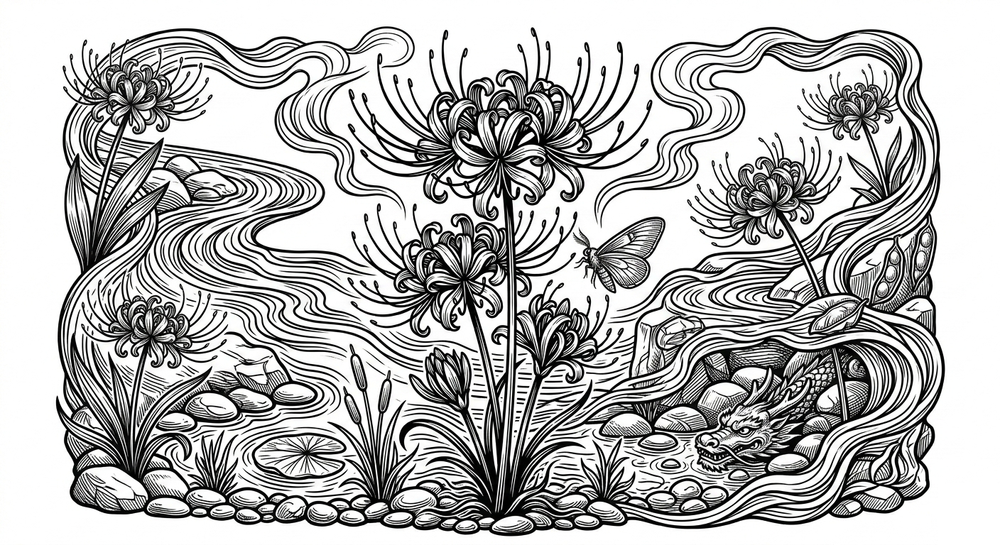
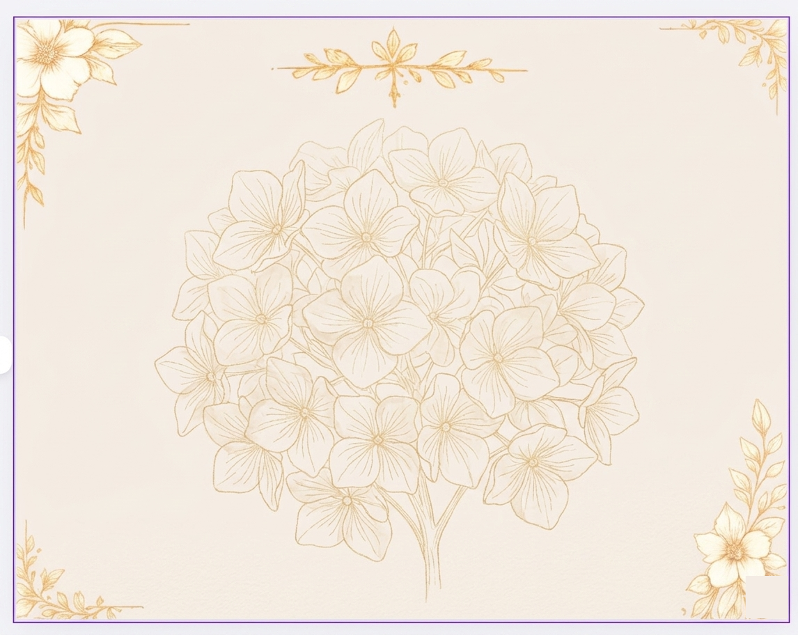
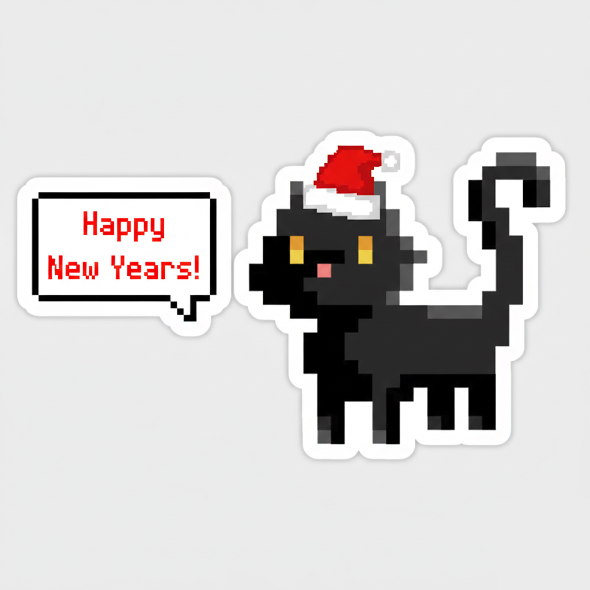

Created for
Tools used
Creative Archive
A curated record of brand work built for real clients — logos, editorial layouts, and digital assets that communicate before a word is read.
Featured Identity
The brand built for the platform — a tech-forward identity that needed to feel both industrial and professional.
Create a mark for Build Foundry that communicated a tech-forward product studio — something that felt credible, distinct, and ready to put in front of real clients and investors.
Combined a blacksmithing metaphor with circuit board aesthetics — leaning into the "foundry" concept to frame software development as craftsmanship. Iterated through multiple directions before landing on the BF monogram with a teal flame accent.
A complete identity system used across the platform, portfolio, and client-facing materials. The mark is immediately recognizable and scales cleanly from favicon size to full hero placement.



Logos, brand kits, editorial layouts — let's build your identity.